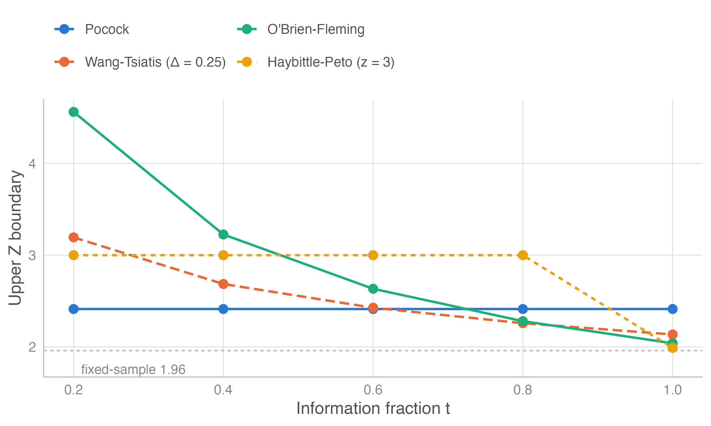
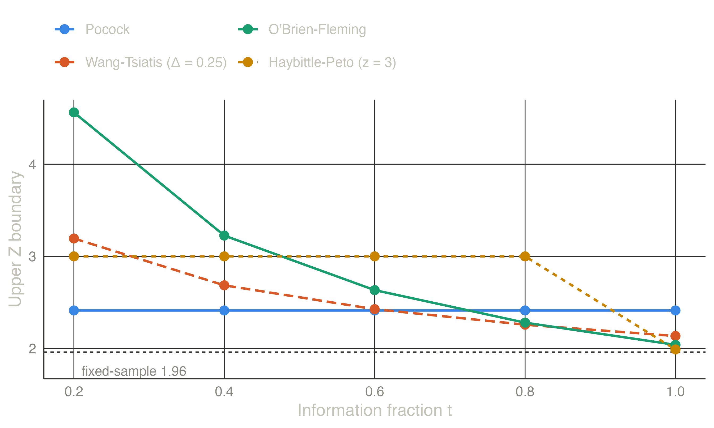

| Look | t | Pocock | Wang-Tsiatis (Δ = 0.25) | O’Brien-Fleming | Haybittle-Peto (z = 3) |
|---|---|---|---|---|---|
| 1 | 0.200 | 2.413 | 3.194 | 4.562 | 3.000 |
| 2 | 0.400 | 2.413 | 2.686 | 3.226 | 3.000 |
| 3 | 0.600 | 2.413 | 2.427 | 2.634 | 3.000 |
| 4 | 0.800 | 2.413 | 2.259 | 2.281 | 3.000 |
| 5 | 1.000 | 2.413 | 2.136 | 2.040 | 1.990 |
Classical group sequential boundaries
Pocock, O’Brien-Fleming, the Wang-Tsiatis family and Haybittle-Peto: K planned looks, boundaries fixed in advance.
The setting
A group sequential design plans \(K\) analyses, usually after equal increments of information. At look \(k\) the study stops and rejects \(H_0\) if \(|Z_k| \ge b_k\) (two-sided) or \(Z_k \ge b_k\) (one-sided). Otherwise it continues, and at the last look \(H_0\) is accepted. The boundaries \(b_1, \dots, b_K\) are chosen so that
\[ P_{H_0}\!\left(\text{cross } b_k \text{ at some look}\right) = \alpha . \]
The classical designs give the boundaries a simple shape and solve a single constant \(C\) for the \(\alpha\) level. They assume the number and timing of looks are fixed in advance; the error-spending approach removes that assumption.
The main families
Pocock (1977). The same nominal level at every look: \(b_k = C\). For \(K = 5\) and two-sided \(\alpha = 0.05\), \(C = 2.413\), a nominal p-value of 0.016 at each look (Pocock 1977).
O’Brien–Fleming (1979). Very strict early, close to the fixed-sample value at the end: \(b_k = C\sqrt{K/k}\). For \(K = 5\), \(C = 2.040\), so the first look needs \(|Z| \ge 4.56\) (O’Brien and Fleming 1979).
Wang–Tsiatis (1987). A one-parameter family that contains both:
\[ b_k = C\, t_k^{\,\Delta - 1/2}, \qquad \Delta = 0 \ \text{(O'Brien–Fleming)}, \quad \Delta = 0.5 \ \text{(Pocock)} . \]
Intermediate values of \(\Delta\) trade early stopping against the final critical value (Wang and Tsiatis 1987).
Haybittle–Peto. A large fixed value at every interim look — typically \(|Z| \ge 3\), \(p < 0.0027\) — and almost the unadjusted value at the end (Haybittle 1971; Peto et al. 1976). It is easy to explain and barely changes the final analysis.
Wider families exist, notably the unified family of Kittelson and Emerson (1999), evaluated by their operating characteristics in Emerson et al. (2007).
Example: five looks, two-sided 5 %, power 90 %
| Design | Maximum n | Expected n under H0 | Expected n under H1 | P(stop by look 3 | H1) |
|---|---|---|---|---|
| Pocock | 1.207 | 1.177 | 0.685 | 0.675 |
| Wang-Tsiatis (Δ = 0.25) | 1.066 | 1.053 | 0.704 | 0.581 |
| O’Brien-Fleming | 1.026 | 1.019 | 0.750 | 0.468 |
| Haybittle-Peto (z = 3) | 1.014 | 1.009 | 0.788 | 0.352 |


The trade-off is clear from the tables:
- Pocock stops early most often when the treatment works, but its maximum sample size is 21 % above the fixed design and its final test is much stricter than 1.96 — a trial that “just misses” at the end can be frustrating.
- O’Brien–Fleming costs only 2.6 % extra at most and keeps the final boundary near 1.96. It rarely stops at the first look, which is usually what a monitoring committee wants when data are immature. This is why it (or its spending-function analogue) is the most common choice in confirmatory trials.
- Haybittle–Peto behaves like O’Brien–Fleming in practice, with a simpler rule.
The expected sample size under \(H_0\) is the maximum: without a futility boundary, a trial of an ineffective treatment always runs to the end.
TipIn jmsequential
Sequential → Group Sequential Design (from version 0.1.0). Under Efficacy boundary choose Pocock, O’Brien–Fleming, Wang–Tsiatis (with \(\Delta\)) or Haybittle–Peto (with the interim \(z\)). The Boundaries table and the boundary plot reproduce the tables and figure above.
The example in jamovi
The O’Brien–Fleming design of the example needs no data:
- Sequential → Group Sequential Design.
- Test: Two-sided (symmetric); Type I error (α): 0.05; Number of analyses: 5. The default power is 0.9.
- In the Efficacy boundary box choose O’Brien-Fleming.
The Boundaries table gives the O’Brien–Fleming column of Table 1 (4.56, 3.23, 2.63, 2.28, 2.04) and the design summary its inflation factor, 1.026. The sample sizes are for the default endpoint, a difference in means of 0.5 with SD 1: at most 173 patients, against 169 for a fixed design.


References
Emerson, Scott S., John M. Kittelson, and Daniel L. Gillen. 2007. “Frequentist Evaluation of Group Sequential Clinical Trial Designs.” Statistics in Medicine 26 (28): 5047–80. https://doi.org/10.1002/sim.2901.
Haybittle, J. L. 1971. “Repeated Assessment of Results in Clinical Trials of Cancer Treatment.” The British Journal of Radiology 44 (526): 793–97. https://doi.org/10.1259/0007-1285-44-526-793.
Kittelson, John M., and Scott S. Emerson. 1999. “A Unifying Family of Group Sequential Test Designs.” Biometrics 55 (3): 874–82. https://doi.org/10.1111/j.0006-341x.1999.00874.x.
O’Brien, Peter C., and Thomas R. Fleming. 1979. “A Multiple Testing Procedure for Clinical Trials.” Biometrics 35 (3): 549. https://doi.org/10.2307/2530245.
Peto, R, M C Pike, P Armitage, et al. 1976. “Design and Analysis of Randomized Clinical Trials Requiring Prolonged Observation of Each Patient. I. Introduction and Design.” British Journal of Cancer 34 (6): 585–612. https://doi.org/10.1038/bjc.1976.220.
Pocock, S. J. 1977. “Group Sequential Methods in the Design and Analysis of Clinical Trials.” Biometrika 64 (2): 191–99. https://doi.org/10.1093/biomet/64.2.191.
Wang, Samuel K., and Anastasios A. Tsiatis. 1987. “Approximately Optimal One-Parameter Boundaries for Group Sequential Trials.” Biometrics 43 (1): 193. https://doi.org/10.2307/2531959.